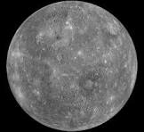
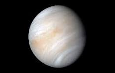
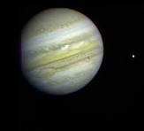
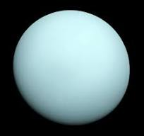
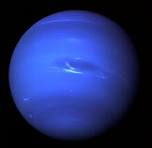

Our Solar System
The Solar System consists of eight planets that orbit the Sun. Each planet is unique in its size, atmosphere, and characteristics.
| Planet | Known As | Distance from Sun |
|---|---|---|
| Mercury | Smallest Planet | 57.9 Million km |
| Venus | Earth's Twin | 108.2 Million km |
| Earth | Blue Planet | 149.6 Million km |
| Mars | Red Planet | 227.9 Million km |
| Jupiter | Largest Planet | 778.5 Million km |
| Saturn | Ringed Planet | 1.43 Billion km |
| Uranus | Ice Giant | 2.87 Billion km |
| Neptune | Windiest Planet | 4.50 Billion km |
1. Mercury

Mercury is the closest planet to the Sun and the smallest planet in our Solar System. It has no moons and experiences extreme temperatures.
- Closest to the Sun
- No atmosphere
- No moons
2. Venus

Venus is the hottest planet because its thick atmosphere traps heat. It rotates very slowly in the opposite direction of most planets.
- Hottest planet
- Thick atmosphere
- No moons
3. Earth

Earth is the only known planet that supports life. About 71% of Earth's surface is covered by water.
- Only known planet with life
- One moon
- Has liquid water
4. Mars

Mars is known as the Red Planet because of iron oxide on its surface. Scientists believe it once had flowing water.
- Red Planet
- Two moons
- Home to Olympus Mons
5. Jupiter

Jupiter is the largest planet in our Solar System. It has a giant storm called the Great Red Spot.
- Largest planet
- More than 90 moons
- Great Red Spot
6. Saturn

Saturn is famous for its beautiful rings made of ice and rock particles.
- Most spectacular rings
- More than 140 moons
- Gas giant
7. Uranus

Uranus rotates on its side, making it unique among the planets. It is an ice giant.
- Ice giant
- Blue-green color
- 27 known moons
8. Neptune

Neptune is the farthest planet from the Sun and has the fastest winds in the Solar System.
- Strongest winds
- Ice giant
- 14 known moons
Interesting Facts
- Mercury is the smallest planet.
- Venus is the hottest planet.
- Earth supports life.
- Mars may have had water.
- Jupiter is the biggest planet.
- Saturn has magnificent rings.
- Uranus rotates sideways.
- Neptune has the strongest winds.